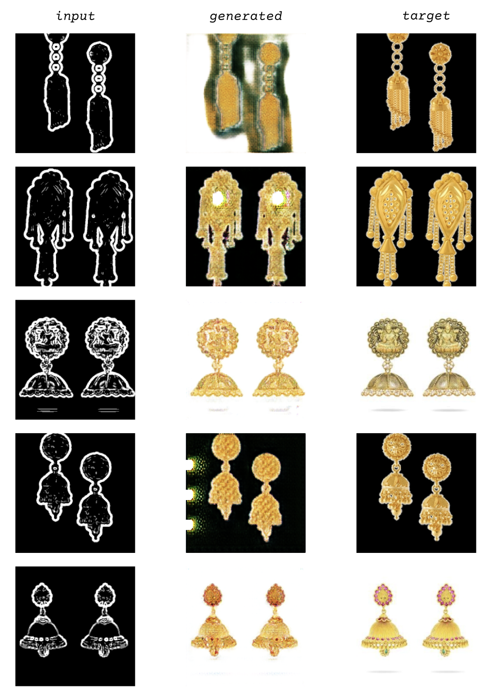

Emon Datta
Jhumkas, a type of earrings, are a common accessory for myself and other diaspora South Asian Americans growing up in the Bay Area, CA, and I see them out a lot in South Asian spaces in New York as well. Historically of course there are many variations of jhumkas and jewelry across South Asia, depending on region, caste, class, etc., but the majority of those I see in America (and have worn myself) are a simple gold bell design, often purchased from 1 of a few popular brands.
For this model, I used a public dataset I found on GitHub of hundreds of gold earrings sold by popular Indian jewelry marketplaces. I’m interested in seeing what a simple image-based model, lacking any information on history, context, or caste/class/region based variations will produce as a “representative” earring given a simple outline. Since globalization and mass production of clothing and accessories already puts such items through a similar genericizing process, but of course via a much larger and more complex/unpredictable system, I’m curious as to whether a fully automated process on a relatively small sample size (of earrings that likely were already affected by the former processes) will produce similar results.
